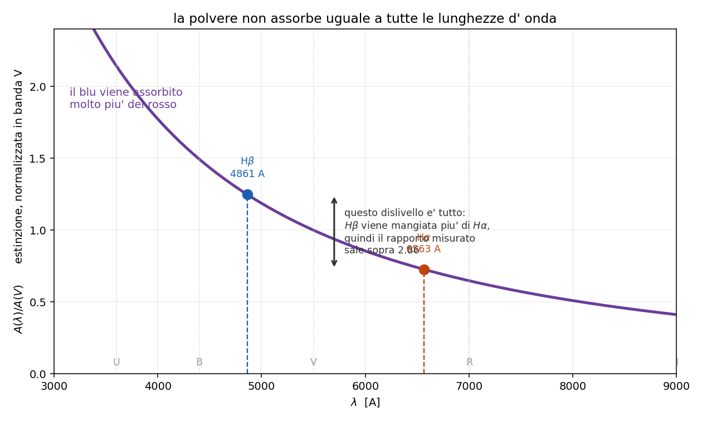

5.6 - Estinzione da polvere
Dispensa: cap. 5.6 (pag. 66-69).
Capitolo in PODS nella seconda meta': il problema di misurare la polvere sembra
impossibile (servirebbe conoscere lo spettro vero), e la via d' uscita e' un' idea sola.
Fin qui si e' sempre parlato di gas. Ma nel mezzo interstellare, oltre al gas, ci sono i grani di
polvere: silicati, grafite, alluminio, ferro.
E questi grani rovinano tutto:
quando guardo una stella o una nebulosa non vedo il suo spettro vero. La luce ha attraversato
uno strato di polvere e mi arriva indebolita e con la forma cambiata.
Questo capitolo serve a due cose: capire come la polvere cambia lo spettro, e imparare a
misurarla per poterla togliere.
1. Cosa fa la polvere
Due cose, e vanno tenute distinte anche se producono lo stesso effetto:
assorbe: il grano si prende il fotone, si scalda, e riemette nell' infrarosso
diffonde (scattering): il grano devia il fotone in un' altra direzione
Dal mio punto di vista il risultato e' lo stesso - quel fotone non mi arriva - e infatti i due
processi si mettono insieme in un unico coefficiente. Per questo si parla di estinzione e non
di assorbimento: e' la somma delle due cose.
2. Come si scrive l'attenuazione
E' la stessa equazione del capitolo 3, ma senza il termine di emissione: la
polvere lungo il cammino toglie luce e basta (quello che riemette lo riemette nell' infrarosso,
quindi non torna nella banda che stai guardando).
$$dI_\lambda = -k_\lambda I_\lambda \, ds = -I_\lambda \, d\tau_\lambda$$
che integrata da':
$$I_\lambda = I_{0,\lambda} \, e^{-\tau_\lambda}$$
$I_{0,\lambda}$ $\quad$ lo spettro intrinseco, quello che la sorgente ha davvero
$I_\lambda$ $\quad$ quello che misuro io
$\tau_\lambda = \int k_\lambda ds$ $\quad$ la profondita' ottica della polvere lungo il cammino
Niente di nuovo, e' l' equazione del trasporto con $S = 0$.
3. In magnitudini
Gli astronomi non lavorano con $e^{-\tau}$ ma con le magnitudini, quindi traduciamo. Per
definizione di magnitudine:
$$I_\lambda = I_{0,\lambda} \, 10^{-0.4 A_\lambda}$$
Confrontando i due esponenti si ottiene la conversione, che e' solo un cambio di base del
logaritmo:
$$A_\lambda = 2.5 \log e \cdot \tau_\lambda = 1.086 \, \tau_\lambda$$
$A_\lambda$ $\quad$ estinzione in magnitudini a quella lunghezza d' onda
Attenzione: il coefficiente e' 1.086, cioe' praticamente 1. Quindi:
$\tau = 1$ vale circa una magnitudine di estinzione. E' una di quelle coincidenze comode che
conviene tenere in testa, perche' permette di passare da un linguaggio all' altro a mente.
4. Perché si parla di arrossamento
Il punto e' che $\tau_\lambda$ dipende dalla lunghezza d' onda, e dipende parecchio: la polvere
assorbe molto piu' nel blu che nel rosso.
Studiando coppie di stelle dello stesso tipo spettrale a distanze diverse si scopre che la
dipendenza si puo' fattorizzare:
$$\tau_\lambda = c \cdot f(\lambda)$$
$c$ $\quad$ dipende da quanta polvere c'e' lungo quella direzione
$f(\lambda)$ $\quad$ la legge di estinzione: la forma, che e' sempre la stessa
Occhio a questo: questa fattorizzazione e' quello che rende il problema risolvibile.
Vuol dire che la polvere ha sempre lo stesso "colore", cambia solo quanta ce n'e'. Quindi mi basta
misurare un numero ($c$) e so l' attenuazione a tutte le lunghezze d' onda.
4.1 La legge standard
La piu' usata e' quella di Cardelli, Clayton & Mathis 1989 (CCM89), normalizzata alla banda V
(5500 A):
$$\frac{A(\lambda)}{A(V)} = a(x) + \frac{b(x)}{3.1}, \qquad x = \frac{10000}{\lambda} - 1.82$$
$x$ $\quad$ numero d' onda traslato, vale zero in banda V
$a(x), b(x)$ $\quad$ due polinomi, scritti per esteso nella dispensa
$3.1$ $\quad$ il valore standard di $R_V = A(V)/E(B-V)$ per il mezzo interstellare diffuso
4.2 Quanto arrossa, in numeri
Se $A(V) = 1$ magnitudine, del flusso originale sopravvive:
| banda | quanto passa |
|---|---|
| U (ultravioletto) | 23% |
| V (visibile) | 40% |
| I (infrarosso vicino) | 63% |
Lo spettro esce tutto piu' debole ma sbilanciato verso il rosso, e la stella sembra piu' fredda
di quello che e'. Questo e' l' arrossamento, e si quantifica con l' eccesso di colore:
$$E(B-V) = (B-V)_{oss} - (B-V)_0 = \frac{A(V)}{3.1}$$

5. Come si misura: il decremento di Balmer
E qui torna il trucco del capitolo 5.5, ed e' il pezzo che rende utile tutto
il resto.
Il problema di misurare l' estinzione e' che dovrei conoscere lo spettro intrinseco, e non lo
conosco: e' quello che sto cercando di ricostruire. Serve qualcosa di cui so gia' la risposta.
Quel qualcosa e' il rapporto fra due righe di ricombinazione:
$$\left( \frac{I_{H\alpha}}{I_{H\beta}} \right)_0 \approx 2.86$$
Lo so gia', perche' nel capitolo 5.5 si e' visto che nel rapporto la
geometria si semplifica: non dipende da quanto e' grande la nebulosa, quanto e' densa o quanto e'
lontana. Vale per tutte le nebulose.
5.1 Il ragionamento
- so che quel rapporto deve valere 2.86
- lo misuro, e mi viene per esempio 4.2
- la differenza me l' ha messa la polvere: $H\beta$ (4861 A, blu) e' stata attenuata piu' di
$H\alpha$ (6563 A, rosso) - da quanto mi sono scostato ricavo quanta polvere c'e'
Mettendo insieme l' attenuazione delle due righe con la CCM89:
$$\frac{I_{H\alpha}}{I_{H\beta}} = \left( \frac{I_{H\alpha}}{I_{H\beta}} \right)_0 10^{0.1386 \, A(V)}$$
e invertendo:
$$A(V) = 7.215 \, \log \frac{(I_{H\alpha}/I_{H\beta})_{misurato}}{2.86}$$
5.2 Perché questo metodo è comodo
Non serve sapere niente della nebulosa. Non quanto e' lontana, non quanto e' grande, non quanto
gas contiene. Tutta quella roba sta sia sopra che sotto nel rapporto e se ne va.
Servono solo due cose: il rapporto misurato fra due righe che escono dallo stesso posto, e il
valore teorico che quel rapporto dovrebbe avere.
Vale la pena dirlo: e' il principio generale di tutta la spettroscopia diagnostica.
Un rapporto fra due righe della stessa sorgente e' un numero che non dipende dalla sorgente, e
quindi si puo' confrontare con la teoria. Ogni volta che nel corso salta fuori uno strumento di
misura - questo, il termometro [O III], il densimetro [S II] - sotto c'e' sempre lo stesso trucco.
5.3 Altre coppie di righe
Si puo' fare con qualsiasi coppia, cambia solo il coefficiente davanti:
| coppia | coefficiente |
|---|---|
| $H\alpha / H\beta$ | 7.215 |
| $H\beta / H\gamma$ | 13.713 |
| $H\beta / H\delta$ | 9.362 |
Il coefficiente cresce quando le due righe sono piu' vicine in lunghezza d' onda: la
differenza di estinzione fra loro e' piu' piccola, quindi va amplificata di piu' per tirarne fuori
lo stesso $A(V)$. Che vuol dire anche che la misura e' piu' rumorosa.
I rapporti teorici della serie si danno sempre rispetto a $H\beta$:
$H\gamma/H\beta \approx 0.47$, $H\delta/H\beta \approx 0.26$, e cosi' via.
6. In breve
- la polvere assorbe e diffonde: dal mio punto di vista i due effetti si sommano in un unico
coefficiente di estinzione - $I_\lambda = I_{0,\lambda} e^{-\tau_\lambda}$, cioe' il trasporto con $S = 0$
- in magnitudini: $A_\lambda = 1.086 \, \tau_\lambda$, quindi $\tau = 1$ ~ 1 magnitudine
- $\tau$ cresce verso il blu -> lo spettro si arrossa e la sorgente sembra piu' fredda
- $\tau_\lambda = c \cdot f(\lambda)$: la forma e' universale, cambia solo quanta polvere c'e'
- si misura col decremento di Balmer: si confronta $H\alpha/H\beta$ misurato col valore teorico
2.86, e l' eccesso da' $A(V)$ - funziona perche' nel rapporto la geometria si semplifica: non serve sapere niente della
nebulosa
Domande tattiche
1. Per misurare quanto la polvere ha attenuato una sorgente servirebbe sapere com' era la
sorgente prima. Ma non lo sai. Come se ne esce? (-> sezione 5)
2. Perche' la polvere fa sembrare una stella piu' fredda di quello che e'? (-> sezione 4.2)
3. Il metodo del decremento di Balmer funziona senza sapere niente della nebulosa: ne' distanza,
ne' dimensione, ne' quanto gas contiene. Da dove viene questa liberta'? (-> sezione 5.2, e
capitolo 5.5)
4. Perche' il coefficiente per la coppia $H\beta/H\gamma$ (13.7) e' piu' grande di quello per
$H\alpha/H\beta$ (7.2)? E cosa vuol dire in pratica sulla qualita' della misura? (-> sezione 5.3)
5. Una profondita' ottica $\tau = 2$ quante magnitudini di estinzione fa, all' incirca?
(-> sezione 3)